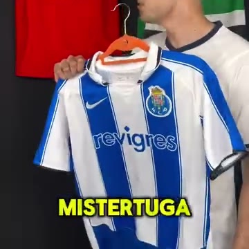
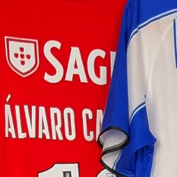
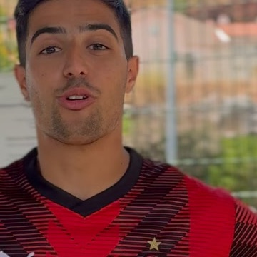

Limpar metadados
dos criativos
Arrasta os vídeos e as fotos das camisolas, soltos ou numa pasta inteira. No fim ficas com os mesmos ficheiros, sem perder qualidade nenhuma e sem o rasto escondido nos dados: o programa e o codificador (também o da Meta), datas, títulos internos, telemóvel, localização GPS e etiquetas de IA.
- 0%perda de qualidade
- 100%no teu Mac
- Vídeos e fotosMP4, MOV, JPG, PNG e WebP



Abre
Na app MisterTuga, separador Metadados. Também abre no Chrome.
Arrasta
Os vídeos e as fotos, soltos ou numa pasta inteira, para a caixa.
Escolhe
Só ver mostra o que escondem. Limpar apaga o rasto.
Guarda
Numa pasta à tua escolha ou em zips de cerca de 600 MB.
O que faz, em cinco pontos
de perda de qualidade
Nada é refeito nem recomprimido. A imagem e o som ficam byte a byte iguais e o vídeo mantém o tamanho. Só se apagam os blocos escondidos do ficheiro.
Todo o rasto escondido sai de campo
Tudo o que um vídeo ou uma foto guarda por trás, sem se ver. Os tracejados são da limpeza extra, que ligas tu:
Só o necessário para ver bem
- A imagem, o som e a duração, tal e qual
- O perfil de cor das fotos, para as cores não mudarem (a menos que o tires na limpeza extra)
- A orientação, se a foto ou o vídeo estiver rodado
A imagem e o som contam
A Meta e o TikTok também reconhecem um vídeo pelo que se vê e se ouve. Isso não são metadados e esta limpeza não lhe toca, tal como às marcas de água invisíveis.
Formatos
MP4, MOV e M4V; JPG, PNG e WebP, em qualquer quantidade. Fotos HEIC do iPhone não entram, porque convertê-las perderia qualidade.